.01
Onboarding and diet quiz
New users take a short quiz about their preferences and health goals. Fitnest uses this to personalize meal recommendations from the start.
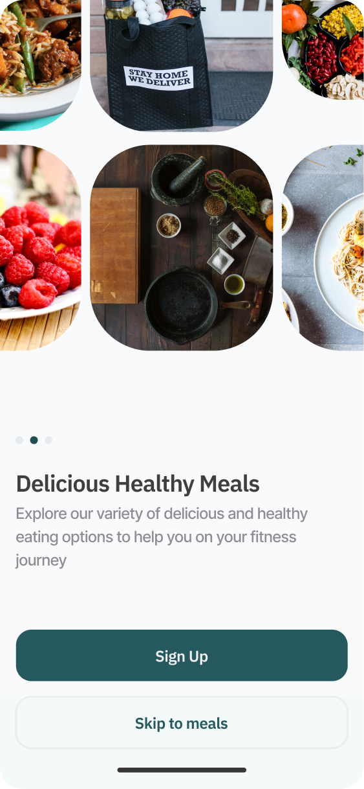
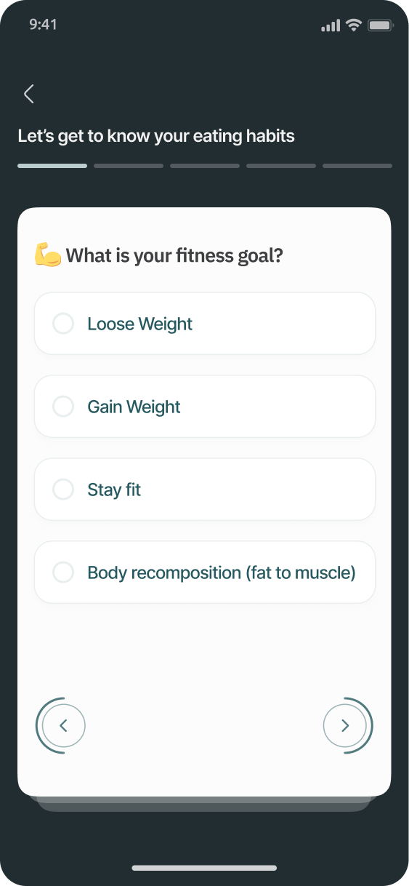
After lockdown ended, I needed to restart my diet and eat healthier. Finding places to order from wasn't the issue. Finding meals that were actually compliant with my diet was. The internet had endless options but nothing that made it easy to filter, plan, and stick with it. That frustration became Fitnest.

I spoke to 5 people across different ages and dietary backgrounds to understand where healthy eating breaks down in practice. Not in theory, but in their actual daily routines. I wanted to know what they've tried, what stuck, and what didn't.
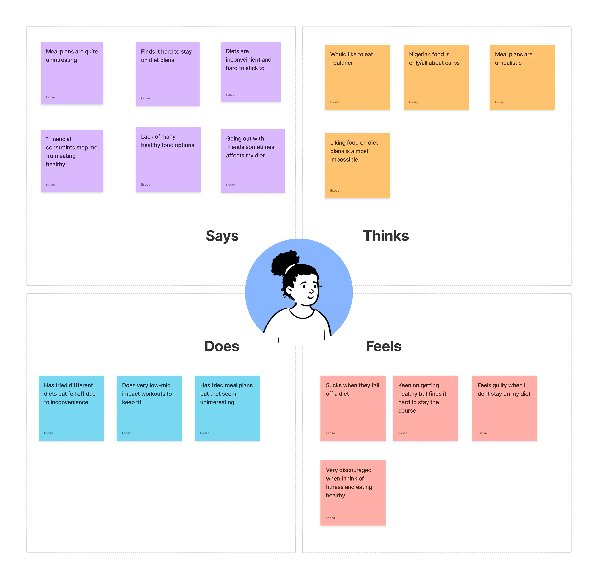
I grouped what I heard into patterns. The emotional side was just as telling as the practical problems.
People who haven't been on strict diets assume the food will be boring or tasteless. That perception alone stops them from starting.
People who cook healthy meals find recipes online, but busy schedules make it hard to keep up week after week.
Especially for recent graduates or people on tight budgets. The perception that eating well costs more keeps people defaulting to fast food.
When a diet requires more effort than people are used to, they stop. Not because they don't care, but because the friction is too high.
People over 35 with conditions like diabetes or hypertension prefer preparing meals themselves for safety reasons. They need options, not just convenience.
People watch their diets for personal or health reasons. Staying on track shouldn't require becoming a meal planning expert.
I audited 5 platforms, comparing food options, payment models, target audience, and overall experience. Most were either subscription heavy with limited flexibility, or had decent options but a cluttered experience that made browsing feel like work.
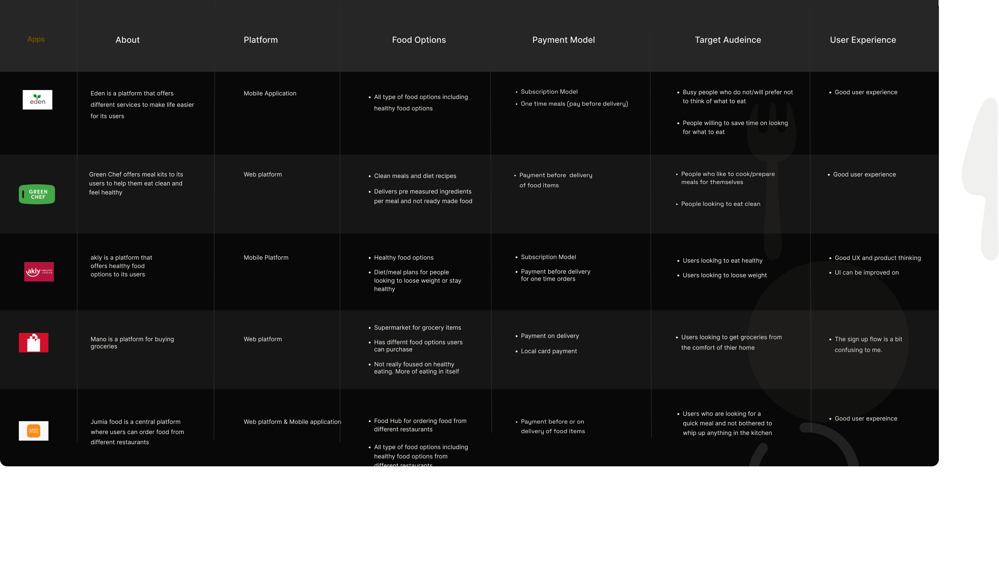
Comparing five platforms across food options, payment models, and overall experience
The gap was clear. There was room for something that felt simple to use, offered diet compliant meals, and didn't assume users wanted to plan everything themselves.
Based on the research, the features that made the most sense were diet compliant meal plans delivered to your door, healthy recipes for people who like to cook, scheduled meals by the week, and meal suggestions based on what's already in your fridge.
I started with wireframes to map the core flows, then moved into high fidelity. The goal was to keep everything clean and easy to navigate, even for first time users.
New users take a short quiz about their preferences and health goals. Fitnest uses this to personalize meal recommendations from the start.


Browse meals by diet type, calorie count, or category. Nutritional details are shown upfront so there's no guessing.
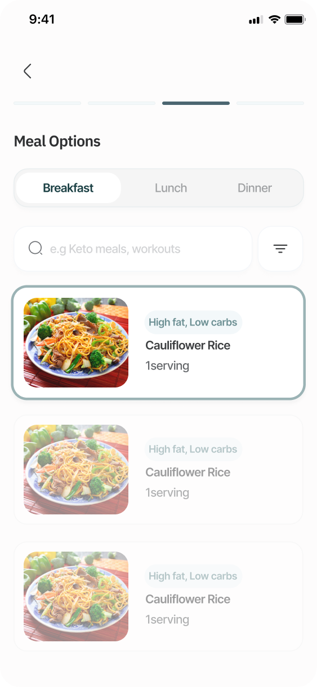
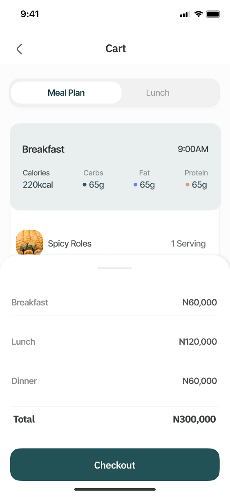
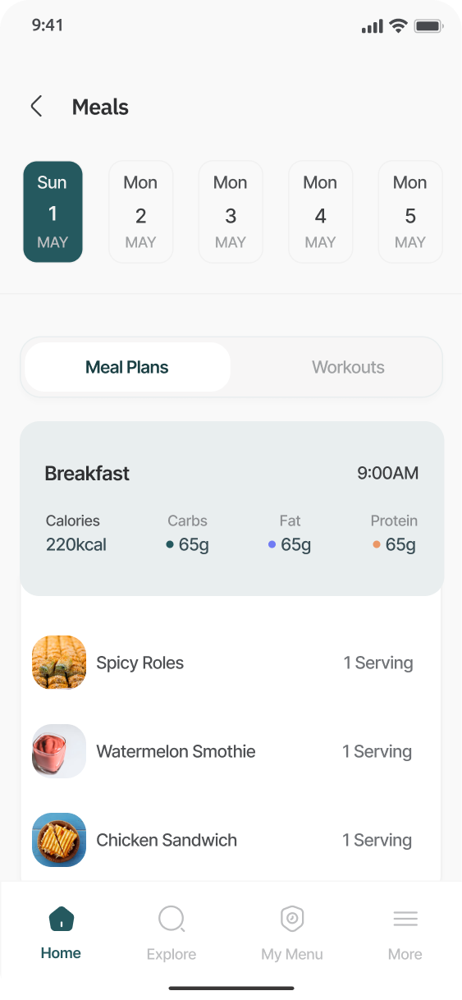
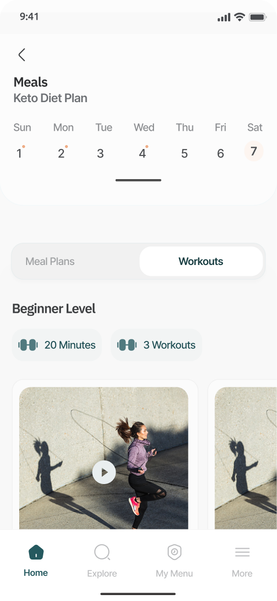
Plan meals for the week ahead. Eliminates the daily decision of figuring out what to eat.
Not sure where to start? The assistant creates a custom meal plan based on your fitness or health needs.
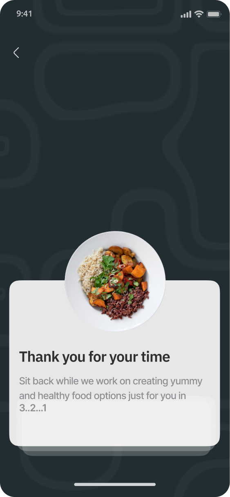
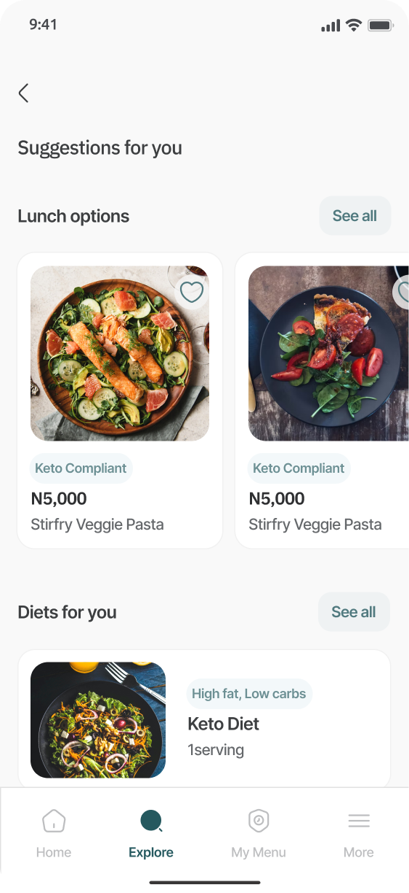
I tested the prototype with target users to see how they navigated the app, how useful the diet quiz felt, and whether the visual cues were working. Three things came back clearly.
Users had trouble finding the diet quiz. The icon wasn't intuitive and the placement wasn't prominent enough.
Some users felt the quiz was too long. They wanted to get to the meals faster.
People wanted to select more than one food option per category when browsing.
I used these findings to revise the icon system, shorten the quiz flow, and update the selection model for meal browsing.
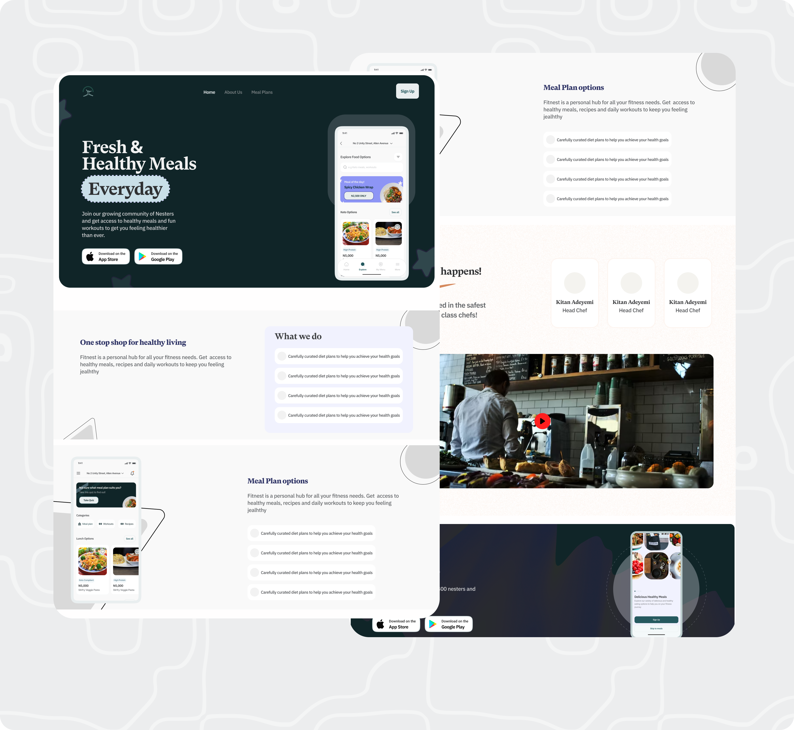
The best products come from problems you've actually felt. But feeling the problem isn't enough. You have to validate that other people feel it too.
This project started from personal frustration. What made it worth pursuing was hearing the same frustration from people with completely different lifestyles and dietary needs.
The usability testing was the most valuable part. It showed me that what feels obvious as the designer is not always obvious to the person using it. Small things like icon choice and quiz length had a bigger impact on the experience than the features themselves.